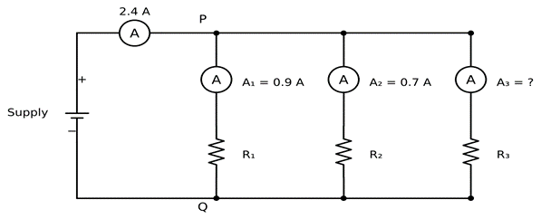
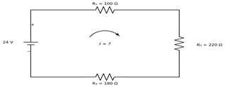

Unit-wise University Important Questions & Lab Viva-Voce
Unit-wise important questions for the university theory exam, with marks and Bloom's Level for each question. Tap a unit to view its questions.
1. Define Electronics and Electrical Engineering. Compare them with applications.
2. Define current, voltage and power. Write their units, formulae and measuring instruments.
3. A charge of 360 C flows through a heater in 2 minutes, and the source does 79,200 J of work. Find the current, voltage, power and resistance of the heater.
4. Draw and explain in detail resistor with its construction.
5. Draw and explain the construction of a capacitor. Write its applications.
6. Define an inductor. List its types, applications, advantages and disadvantages.
7. Draw and explain the AC sinusoidal waveform with full cycle, frequency, time period and amplitude.
8. Define any four important terms of AC sinusoidal waveform.
9. For v = 325 sin(100πt) V, find the peak value, angular frequency, frequency, time period and the instantaneous voltage at t = 2.5 ms.
10. State and explain Ohm's Law with an example.
11. A 2.2 kΩ resistor is connected across a 12 V supply. Find the current through it in milliamperes.
12. Explain KCL and KVL with neat diagrams.
13. Three branches are connected in parallel across a supply. The ammeter in the main line reads 2.4 A. The ammeters in the first two branches read 0.9 A and 0.7 A. Find the reading of ammeter A₃ in the third branch.

14. Compare series and parallel circuits with diagrams.
15. Resistors of 3 Ω, 6 Ω and 9 Ω are connected across a 36 V supply. Find the equivalent resistance, current and total power for (a) series and (b) parallel connection.
16. Three resistors R₁ = 100 Ω, R₂ = 220 Ω and R₃ = 180 Ω are connected in series across a 24 V supply. Find the total resistance, the circuit current and the voltage across each resistor.

17. Solve using KCL and KVL: (a) At a junction, 0.5 A, 1.2 A and 0.8 A enter and 0.9 A and 0.3 A leave. Find the sixth current. (b) A loop has V = 12 V, with 6 Ω, 3 Ω and 7 Ω in series. Find the loop current.
18. Draw Star and Delta networks. Write the conversion formulae between them.
19. Convert a Star network with Ra = 4 Ω, Rb = 6 Ω and Rc = 12 Ω into Delta.
Practice these questions before your practical exam — they cover Experiments 1 to 5 of the Practical Manual. Tap a question to reveal its answer.
Ans: A DMM is a portable measuring instrument that displays readings in digital form. It can measure AC and DC voltage, AC and DC current and resistance, and can also check continuity and diodes. Many DMMs can additionally measure capacitance, frequency and transistor gain (hFE).
Ans: An ammeter measures the current flowing through an element, so the same current must pass through it; hence it is connected in series. It has very low resistance so that it does not change the circuit current. A voltmeter measures the potential difference between two points, so it is connected across (in parallel with) the element. It has very high resistance so that it draws negligible current.
Ans: Because the ammeter has very low resistance, connecting it across the supply acts almost like a short circuit. A very large current will flow, which can damage the ammeter, blow its fuse or damage the power supply.
Ans: An RPS converts the AC mains supply into a smooth, adjustable DC output. It is called regulated because it keeps the output voltage constant even when the load current or the AC mains voltage changes. Most RPS units also have a current-limit control to protect the circuit.
Ans: A breadboard is a solderless board used to build and test temporary circuits. In the central area, each short row of five holes is connected internally by a metal spring clip; the two halves are separated by a central groove. The long rows (rails) along the top and bottom edges are connected along their length and are used for the supply (+) and ground (−) lines.
Ans: A fuse is a protective device consisting of a thin wire of low melting point. When the current exceeds the safe value (due to overload or short circuit), the wire melts and opens the circuit, thereby protecting the equipment and wiring from damage.
Ans: Earthing is connecting the metallic body of electrical equipment to the earth through a low-resistance conductor. If a live wire accidentally touches the body, the fault current flows safely to earth, the fuse/MCB operates, and the body remains near earth potential. This protects the user from electric shock.
Ans: If both hands touch different points of a live circuit, current can flow from one hand to the other through the chest and heart, which can be fatal. Using one hand and keeping the other hand away from earthed objects avoids such a path through the heart.
Ans: Switch OFF the mains supply immediately; if that is not possible, separate the person from the live conductor using a dry, non-conductive object such as a wooden stick or dry cloth — never touch the person directly. Check breathing and pulse and start CPR if they are absent, call for medical help, keep the person lying down and warm, and report the incident to the faculty-in-charge.
Ans: The range is the maximum value an instrument can measure on a selected setting, and the least count is the smallest value that can be read accurately on it. A higher range is selected first so that the instrument is not damaged if the actual value is larger than expected; the range is then reduced to obtain a more accurate reading.
Ans: Active components require an external source (bias) for their operation and can provide power gain or control the flow of current, e.g. diodes and transistors. Passive components do not require an external source for their operation and cannot provide power gain; they only consume, store or release energy, e.g. resistors, capacitors and inductors.
Ans: Resistance is measured in ohm (Ω), capacitance in farad (F) and inductance in henry (H). In practice, capacitors are usually in µF, nF or pF and inductors in mH or µH.
Ans: The first two bands give the significant figures, the third band gives the multiplier (power of 10) and the fourth band gives the tolerance. For example, Brown–Black–Red–Gold = 1, 0, ×10², ±5% = 1000 Ω = 1 kΩ ± 5%.
Ans: Tolerance is the permissible variation of the actual resistance from its marked (nominal) value, expressed as a percentage. For a 1 kΩ resistor with ±5% tolerance, the actual value may lie anywhere between 950 Ω and 1050 Ω.
Ans: The first two digits (10) are significant figures and the third digit (4) is the multiplier, giving 10 × 10⁴ pF = 100 000 pF = 100 nF = 0.1 µF.
Ans: The longer lead is positive, and a stripe with a minus (−) sign printed on the body marks the negative lead. If it is connected with reverse polarity, the dielectric oxide layer breaks down; the capacitor may heat up, leak, bulge or even burst.
Ans: Set the DMM to diode-test mode. With the red probe on the anode and the black probe on the cathode (forward bias), a good silicon diode shows a reading of about 0.5–0.7 V. On reversing the probes (reverse bias), the meter shows OL (open). A reading near zero in both directions indicates a shorted diode, and OL in both directions indicates an open diode.
Ans: A Zener diode is heavily doped and is designed to operate in the reverse-breakdown region without damage. In this region the voltage across it remains almost constant, so it is used as a voltage regulator. An ordinary P-N diode is used mainly in forward bias for rectification and may be damaged by reverse breakdown.
Ans: The longer lead of an LED is the anode (+) and the shorter lead is the cathode (−). The cathode side is also indicated by a flat edge on the rim of the LED body. The LED glows only when it is forward biased.
Ans: The terminals are Emitter (E), Base (B) and Collector (C). In diode-test mode, with the red probe on the base: if both base–emitter and base–collector junctions conduct (show about 0.6–0.7 V), it is an NPN transistor; if they conduct with the black probe on the base, it is a PNP transistor. The hFE socket of the DMM can also be used to confirm the type and terminals.
Ans: A DSO is an oscilloscope that converts the input signal into digital form using an ADC, stores it in memory and displays it on an LCD screen. Unlike an analog CRO, a DSO can store and recall waveforms, capture single (non-repetitive) events, and provide automatic measurements of amplitude, frequency, time period, etc.
Ans: Frequency is the reciprocal of time period: f = 1 / T. Frequency is measured in hertz (Hz) and time period in seconds (s). For example, if T = 1 ms, then f = 1 / (1 × 10⁻³) = 1000 Hz = 1 kHz.
Ans: Count the number of horizontal divisions occupied by one complete cycle of the waveform and multiply it by the Time/Div setting: T = (number of horizontal divisions per cycle) × (Time/Div).
Ans: Count the number of vertical divisions from the zero (centre) line to the positive peak and multiply it by the Volts/Div setting: Vm = (number of vertical divisions) × (Volts/Div). The peak-to-peak value is obtained by counting divisions from the negative peak to the positive peak; for a symmetrical wave, Vpp = 2 Vm.
Ans: Peak value (Vm) is the maximum value of the waveform measured from zero. Peak-to-peak value is the difference between the positive and negative peaks. RMS value is the equivalent DC value that produces the same heating effect. For a sine wave, Vrms = Vm / √2 ≈ 0.707 Vm.
Ans: The Volts/Div control sets the vertical (voltage) scale — how many volts each vertical division represents. The Time/Div control sets the horizontal (time) scale — how much time each horizontal division represents. They are adjusted to obtain a clear, full-size display of one or more cycles.
Ans: Triggering makes the oscilloscope start each sweep at the same point (level and slope) of the waveform. This keeps the displayed waveform stable and stationary on the screen instead of drifting or appearing as overlapping traces.
Ans: A function generator produces standard test waveforms — sine, square and triangular — whose frequency, amplitude and DC offset can be varied. It is used as a signal source for testing and analysing electronic circuits.
Ans: In the ×1 setting, the signal is applied to the oscilloscope without attenuation. In the ×10 setting, the probe attenuates the signal by a factor of 10 and presents a higher input impedance, which reduces loading of the circuit and increases bandwidth. The probe-attenuation setting of the DSO channel must match the probe switch for correct readings.
Ans: In DC coupling, both the AC and DC components of the signal are displayed. In AC coupling, a capacitor blocks the DC component, so only the AC (varying) part of the signal is displayed, centred on the zero line.
Ans: Ohm's law states that the current flowing through a conductor is directly proportional to the potential difference across its ends, provided the temperature and other physical conditions remain constant: V = I R, where V is in volt, I in ampere and R in ohm.
Ans: Ohm's law does not apply to non-linear devices such as diodes, transistors, thermistors and filament lamps, whose resistance changes with voltage, current or temperature. It also does not apply to unilateral devices (which conduct differently in the two directions) and holds only when temperature is constant.
Ans: For an ohmic resistor, the graph of V against I is a straight line passing through the origin. The slope of the V (y-axis) versus I (x-axis) graph gives the resistance R = ΔV / ΔI.
Ans: KCL states that the algebraic sum of the currents meeting at a junction (node) is zero, i.e. ΣI = 0; the total current entering a junction equals the total current leaving it. It is based on the law of conservation of electric charge.
Ans: KVL states that in any closed path (loop) of a network, the algebraic sum of the IR drops and the emfs is zero, i.e. ΣIR + Σemf = 0; the sum of the voltage rises equals the sum of the voltage drops. It is based on the law of conservation of energy.
Ans: A node (junction) is a point where two or more circuit elements are connected. A branch is a part of the circuit between two nodes containing one or more elements. A loop is any closed path in a circuit. A mesh is a loop that does not contain any other loop inside it.
Ans: The supplied current I reaches the junction and divides among the three parallel branches; by KCL, the current entering the junction equals the sum of the currents leaving it, so I = I₁ + I₂ + I₃. Since the branches are in parallel, the voltage across all three branches is the same.
Ans: The resistors are in series, so the same current I flows through all of them. Tracing the closed loop, the supply voltage (rise) equals the sum of the drops: V − V₁ − V₂ − V₃ = 0, hence V = V₁ + V₂ + V₃, where V₁ = I R₁, V₂ = I R₂ and V₃ = I R₃.
Ans: Small differences arise due to the accuracy (class) and least count of the meters, the internal resistance of ammeters and the finite resistance of voltmeters (loading effect), resistance of connecting wires and loose contacts, tolerance and heating of resistors, and reading (parallax) errors.
Ans: Yes. Kirchhoff's laws are applicable to both DC and AC circuits. In AC circuits they are applied using instantaneous values or phasor (complex) quantities, taking the phase angles of the currents and voltages into account.
Ans: A PN junction diode is a two-terminal semiconductor device formed by joining p-type and n-type material. It allows current to flow easily in one direction only (unidirectional conduction). Its terminals are the anode (A), connected to the p-side, and the cathode (K), connected to the n-side.
Ans: The cathode end is marked by a line (band) printed on the body of the diode. In the circuit symbol, the cathode is the side with the bar, towards which the triangle points.
Ans: At the PN junction, electrons from the n-side and holes from the p-side diffuse across and recombine, leaving a region near the junction with no free charge carriers, called the depletion region. The immobile ions in this region set up an electric field, which gives rise to a potential difference called the barrier potential.
Ans: The diode is forward biased when the +ve terminal of the supply is connected to the p-side (anode) and the –ve terminal to the n-side (cathode). The barrier potential is reduced, the depletion region becomes narrow, holes and electrons cross the junction and a forward current flows. Once the voltage exceeds the knee voltage, the current rises rapidly.
Ans: The diode is reverse biased when the –ve terminal of the supply is connected to the anode and the +ve terminal to the cathode. The barrier potential and the depletion region width increase, so majority carriers cannot cross. A very small current due to minority carriers, called the reverse saturation current, still flows; it is of the order of µA or less and is almost independent of the reverse voltage.
Ans: The knee or cut-in voltage is the forward voltage at which the diode starts conducting appreciably, i.e. the forward current begins to rise sharply. For a silicon diode it is typically about 0.6 V to 0.7 V (for germanium, about 0.2 V to 0.3 V).
Ans: The resistor limits the current through the diode. Above the knee voltage the diode resistance is very small, so without the resistor the current would rise to a very large value and could damage the diode, the ammeter or the supply.
Ans: In forward bias the current is in the range of milliamperes, whereas in reverse bias it is only a few microamperes. A microammeter of 0–200 µA gives a readable deflection for the reverse current, but it would be damaged by the forward current, so it must never be used in the forward-bias circuit.
Ans: The experiment requires the voltage across the diode itself (VF or VR). Part of the supply voltage is dropped across the series resistor, so a voltmeter across the supply would not give the diode voltage.
Ans: It shows that the diode conducts heavily in forward bias above the knee voltage and blocks current (only a very small leakage) in reverse bias, i.e. it is a unidirectional and non-linear device. An ordinary resistor obeys Ohm's law, has a straight-line V–I graph and conducts equally in both directions.
Ans: PIV is the maximum reverse voltage a diode can withstand without breaking down. For the 1N4007 it is 1000 V — far above the supply range used in this experiment, so the diode is never at risk of reverse breakdown here.
Ans: The diode enters reverse breakdown (avalanche/Zener breakdown) and the reverse current rises sharply, which can permanently damage an ordinary rectifier diode. Breakdown is deliberately used, under controlled conditions, in Zener diodes as voltage regulators.